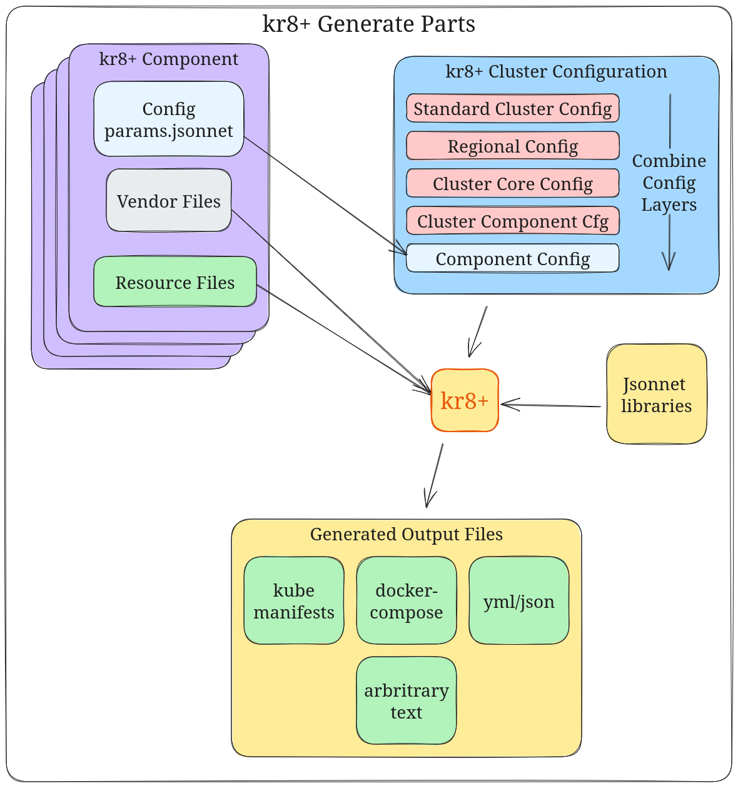
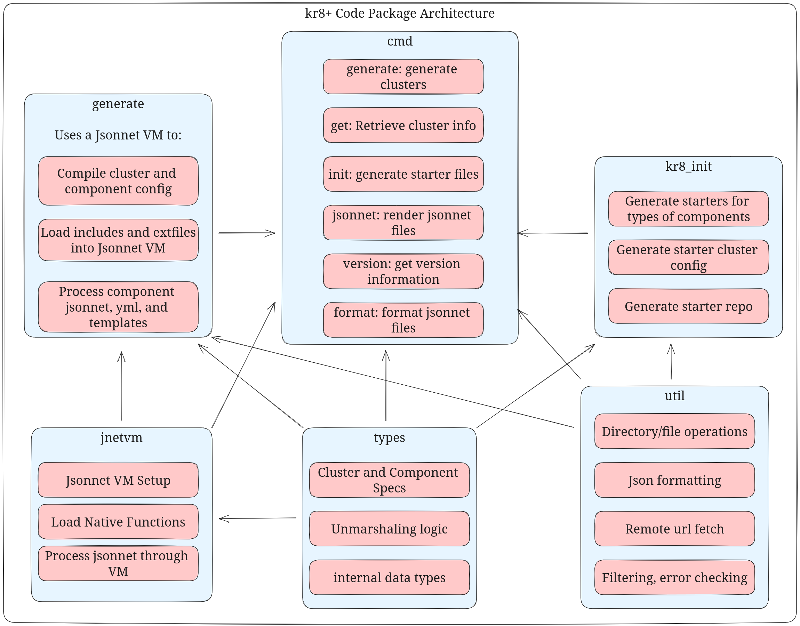

Concepts
kr8+ is used to define and generate cluster config. It is designed to easily layer config from multiple sources.
A deployment consists of 2 parts:
- components - one or more applications packaged together
- clusters - a deployment environment, organized as a tree of configuration
The relationship between components and clusters are simple: components are installed on clusters. A complete deployment with mutliplte clusters has:
- components that are installed on all clusters (auth, cert management, secrets, monitoring)
- components that are only installed on some clusters (services, hardware dependent workloads)
- components that have multiple versions/deployments installed on a single cluster (upgrades, namespacing)
For working examples of everything, check out the ice-bergtech/kr8-examples repo.



Components
A component is something you install in your cluster to make it function and work as you expect. Some examples of components might be:
- cluster core resources: cert-manager or sealed-secrets
- argo applications: generate argo cd applications for managing applying cluster configuration to live nodes
- application: a single application that you want to run in your cluster. This is usually a web application, but it can also be a database, cron job, or documentation.
for more information on components see the Components documentation.
Cluster Config
A cluster is a Kubernetes cluster running in a cloud provider, datacenter or elsewhere. If you are using this tool than you likely have multiple clusters across multiple environments and regions.
By design, configuration is able to be layered and overridden at different levels in a tree structure. This is the strength of jsonnet and allows for a lot of flexibility in managing your cluster configurations.
Cluster names are based on the directory structure under ./clusters by default, or the directory specified by the --clusterdir, -D flags.
A typical cluster config folder layout may look like:
clusters
├── params.jsonnet # top level config; used as defaults for all clusters
├── development
│ ├── dev-test
│ │ └── cluster.jsonnet # dev configs
│ └── dev-staging
│ └── cluster.jsonnet # staging configs
└── production
├── params.jsonnet # standard prod configs for cluster and components
├── region-1
│ ├── params.jsonnet # region specific params
│ ├── pre-prod
│ │ └── cluster.jsonnet
│ └── prod
│ ├── cluster.jsonnet # prod-level configs
│ ├── workloads-1
│ │ └── cluster.jsonnet
│ └── workloads-2
│ └── cluster.jsonnet
└── region-2
├── params.jsonnet # region specific params
├── pre-prod
│ └── cluster.jsonnet
├── prod-1
│ └── cluster.jsonnet
└── workloads-1
└── cluster.jsonnet
See the Clusters documentation.